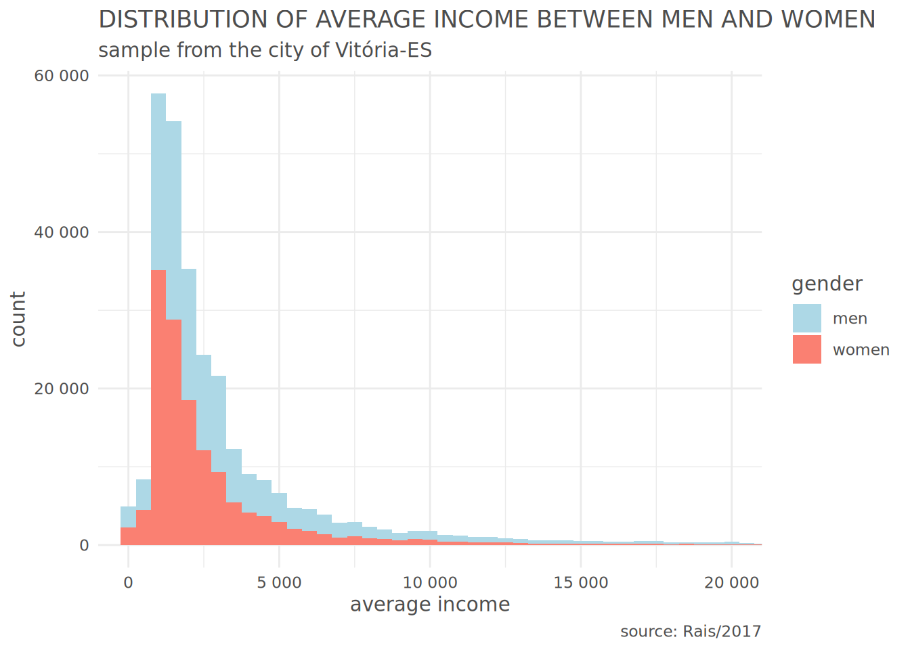
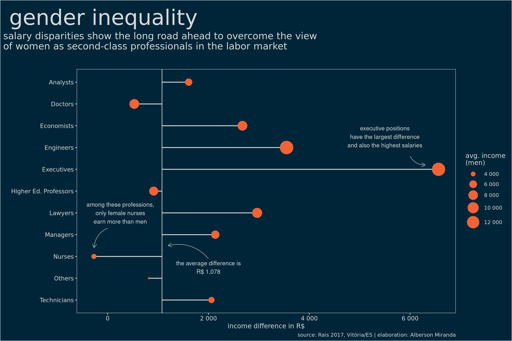

# activating python
library(reticulate)
# selecting the environment
use_condaenv("base")There is still a lot to cover in this “Inference 101” series and, to continue our studies, I brought the 2017 RAIS (Annual Social Information Report) dataset1. With it, we will introduce the concept of effect size and, as a bonus, analyze gender inequality in our beloved capital, Vitória.
1 DATA
Here are two options to obtain this data:
- Manually, by browsing ftp://ftp.mtps.gov.br/pdet/microdados/RAIS/2017/ES2017.7z
- Programmatically via Python.
I chose Python here because I don’t know of a CRAN2 package that handles 7zip compression—if you know one, please let me know in the comments! If you choose to download and extract via script, we can run Python code from R using {reticulate}:
After activating the Python environment, let’s download and extract the dataset to a folder called data inside our project directory. If you downloaded it manually, create the data folder and place the file there.
# importing modules
import urllib.request as rq
import py7zr
# downloading data
url = "ftp://ftp.mtps.gov.br/pdet/microdados/RAIS/2017/ES2017.7z"
rq.urlretrieve(url, "data/rais.7z")
# extracting
rais = py7zr.SevenZipFile("data/rais.7z", mode="r")
rais.extractall(path="data/")
rais.close()We will also need the Brazilian Occupation Code table to understand the professions of the people analyzed. After downloading it, place it in the data folder along with the Rais file.
With the data downloaded, let’s import, explore, and start making sense of it.
# packages
library(tidyverse)
# importing Rais
# as the data contains special characters (accents),
# it is necessary to set the encoding to LATIN1
data = read_delim("data/ES2017.txt", delim = ";",
locale = readr::locale(encoding = "LATIN1"),
col_names = FALSE,
skip = 1)
# selecting variables of interest and renaming columns
# we also need to replace commas with dots
# if you prefer, you can do this step via encoding
data = data %>%
select(X8, X20, X26, X31, X35, X38) %>%
rename("cod_profissao" = X8,
"idade" = X20,
"municipio" = X26,
"cod_raca" = X31,
"rem_media" = X35,
"sexo" = X38) %>%
mutate(rem_media = as.numeric(str_replace_all(rem_media, ",", ".")),
sexo = as.integer(sexo),
idade = as.integer(idade))
# importing CBO table
cbo = read_delim("data/CBO2002.csv", delim = ";",
locale = readr::locale(encoding = "LATIN1"),
col_names = c("cod_profissao", "profissao"),
col_types = c("d", "c"),
skip = 1)
# joining both tables and filtering only Vitória
data = data %>%
inner_join(cbo, by = "cod_profissao") %>%
filter(municipio == 320530)Our data now looks like this:
# viewing dataframe
head(data)# A tibble: 6 × 7
cod_profissao idade municipio cod_raca rem_media sexo profissao
<dbl> <int> <dbl> <chr> <dbl> <int> <chr>
1 717020 42 320530 04 909. 1 Servente de obras
2 715210 28 320530 02 1167. 1 Pedreiro
3 717020 63 320530 02 1022. 1 Servente de obras
4 717020 59 320530 02 880. 1 Servente de obras
5 517410 29 320530 08 1880. 1 Porteiro de edifícios
6 715115 61 320530 08 0 1 Operador de escavadeira2 AGGREGATE DIFFERENCES
First, let’s try to understand our sample:
# number of men and women
data %>%
ggplot(aes(x = factor(sexo),
fill = factor(sexo),
label = scales::number(..count..))) +
geom_bar() +
geom_label(stat = "count",
show.legend = FALSE,
color = "grey30") +
scale_y_continuous(labels = scales::number) +
scale_fill_manual(name = "gender",
labels = c("men", "women"),
values = c("lightblue", "salmon")) +
labs(x = "",
y = "count",
title = "NUMBER OF MEN AND WOMEN",
subtitle = "sample from the city of Vitória-ES",
caption = "source: Rais/2017") +
theme_minimal() +
theme(text = element_text(family = "Century Gothic",
color = "grey30"),
axis.text.x = element_blank())
We have almost the same number of men and women in our sample. Before performing any further analysis or applying filters, let’s calculate the average income:
# average income
aggregate(data = data, rem_media ~ sexo, FUN = mean) sexo rem_media
1 1 3925.187
2 2 2846.727In the aggregate, the average income of men in Vitória is almost 40% higher than that of women, and even when considering the median, it is still almost 30% higher. We can check if this difference is significant with a t-test, but first we should check if its assumptions are met.
# quartiles
boxplot_data = data %>%
group_by(sexo) %>%
summarise(stats = list(fivenum(rem_media))) %>%
unnest(cols = c(stats))
# boxplot
data %>%
ggplot(aes(
x = factor(sexo),
y = rem_media,
fill = factor(sexo)
)) +
geom_boxplot() +
geom_label(
data = boxplot_data,
aes(x = factor(sexo), y = stats, label = scales::number(stats)),
nudge_x = 0.25,
show.legend = FALSE
) +
coord_cartesian(ylim = c(0, 5000)) +
scale_y_continuous(labels = scales::number) +
scale_fill_manual(
name = "gender",
labels = c("men", "women"),
values = c("lightblue", "salmon")
) +
labs(
x = "",
y = "average income",
title = "DISTRIBUTION OF AVERAGE INCOME BETWEEN MEN AND WOMEN",
subtitle = "sample from the city of Vitória-ES",
caption = "source: Rais/2017"
) +
theme_minimal() +
theme(
text = element_text(
family = "Century Gothic",
color = "grey30"
),
axis.text.x = element_blank()
)
2.1 CHECKING THE NORMALITY ASSUMPTION
We know that the t-test is a parametric test and as discussed previously, when the data does not follow a distribution close to normal, we need to perform transformations to achieve normality.
You might think that with such a large sample, the Central Limit Theorem guarantees normality. However, especially with data containing many extreme outliers, the sample size required for convergence can be huge, practically invalidating the CLT assertion3. Therefore, I argue that we should still be careful with this assumption even when dealing with large samples.
The first analysis in this sense is visual. We can see that the distribution has a fat tail and is far from normal, both in the histogram and the Q-Q plot.
# histogram
data %>%
ggplot(aes(
x = rem_media,
fill = factor(sexo)
)) +
geom_histogram(binwidth = 500) +
coord_cartesian(xlim = c(0, 20000)) +
scale_y_continuous(labels = scales::number) +
scale_x_continuous(labels = scales::number) +
scale_fill_manual(
name = "gender",
labels = c("men", "women"),
values = c("lightblue", "salmon")
) +
labs(
x = "average income",
y = "count",
title = "DISTRIBUTION OF AVERAGE INCOME BETWEEN MEN AND WOMEN",
subtitle = "sample from the city of Vitória-ES",
caption = "source: Rais/2017"
) +
theme_minimal() +
theme(text = element_text(
family = "Century Gothic",
color = "grey30"
))
# qqplot
# data will be on the line if normally distributed
par(mfrow = c(1, 2))
qqnorm(data[data$sexo == 1, ]$rem_media,
main = "Q-Q PLOT: MEN")
qqline(data[data$sexo == 1, ]$rem_media)
qqnorm(data[data$sexo == 2, ]$rem_media,
main = "Q-Q PLOT: WOMEN")
qqline(data[data$sexo == 2, ]$rem_media)We can perform an experiment to check the speed of convergence to the normal distribution. By calculating the distribution of a thousand means of 30 men each, if it shows a distribution close to normal we can assume normality and proceed. Otherwise, we will need to treat the data.
# ensure reproducibility
set.seed(1)
# number of samples
n = 1000
# means
means = rep(NA, n)
# drawing samples and calculating means
for (i in 1:n) {
means[i] = mean(
sample(data[data$sexo == 1, ]$rem_media,
size = 30, replace = TRUE
)
)
}
# qqplot
qqnorm(means)
qqline(means)# visualization
hist(means,
main = "DISTRIBUTION OF SAMPLE MEANS",
xlab = "means",
sub = "seed = 1"
)Phew! The CLT held in our data and both the Q-Q plot and histogram showed a distribution close to normal, allowing us to proceed with the tests.
2.2 T-TEST
Now that we’ve ensured the prerequisites, let’s test if the difference between means is significant. For this, we’ll use the {infer} package:
# transforming `sexo` variable
data = data %>%
mutate(sexo = ifelse(sexo == 1, "man", "woman"))
# loading package
library(infer)
# calculating t statistic
calculated_stat = data %>%
specify(rem_media ~ sexo) %>%
calculate(stat = "t", order = c("man", "woman"))
# generating null distribution
null_dist = data %>%
specify(rem_media ~ sexo) %>%
hypothesise(null = "independence") %>%
generate(reps = 100, type = "permute") %>%
calculate(stat = "t", order = c("man", "woman"))
# visualizing null distribution and test statistic
null_dist %>%
visualize(method = "both") +
shade_p_value(calculated_stat, direction = "greater")
# calculating p-value
null_dist %>%
get_p_value(obs_stat = calculated_stat, direction = "greater")# A tibble: 1 × 1
p_value
<dbl>
1 0With a p-value of 0% and a calculated statistic miles away from the null distribution, it is clear that the difference is significant. However, this does not mean it is large or small. That’s where effect size indicators come in.
2.3 EFFECT SIZE: Cohen’s D
In this post I showed that sample size is crucial for the t-test and we tend to reject the null hypothesis as the sample size increases. Here, with more than 140,000 observations for each gender, it would be hard for these differences not to be significant. To complement this test, we can calculate the effect size using Cohen’s d statistic.
Widely used in health experiments with paired t-tests, when it is necessary to define the effect of an action in a treatment group compared to a control group, Cohen’s d is an indicator of standardized differences and is particularly valuable for quantifying the effect of an intervention, whether in public policy or marketing actions in your company. This means it emphasizes the size of the difference between means, without confusing it with sample size.
Because it is standardized (i.e., not measured in the sample unit, here BR\(, but in standard deviations), it can be easily compared across different experiments. Its calculation is as follows:\)$ d = $$
For two fixed means, the smaller the standard deviation, the larger the d statistic. Conversely, the larger the standard deviation, the smaller the effect size.
In R, we’ll use the {effectsize} package:
# loading package
library(effectsize)
# calculating standardized difference
cohens_d(
data[data$sexo == "man", ]$rem_media,
data[data$sexo == "woman", ]$rem_media
)Cohen's d | 95% CI
------------------------
0.26 | [0.25, 0.26]
- Estimated using pooled SD.# interpreting d statistic
interpret_cohens_d(0.26, "gignac2016")[1] "small"
(Rules: gignac2016)With a statistic \(d=0.26\), the difference is considered small. On the Gignac & Szodorai (2016) scale:
rules(
c(0.2, 0.41, 0.63),
c("very small", "small", "moderate", "large"),
"Gignac & Szodorai (2016)"
)# Reference Thresholds (Gignac & Szodorai (2016))
Label
-------------------------
very small <= 0.2
0.2 < small <= 0.41
0.41 < moderate <= 0.63
0.63 < large In a situation of equity, 50% of women would have income below the average man, while the other half would have income above.
An effect of 0.26 means that 62% of women would have income below the average man in Vitória, while only 38% would earn more than the average man4.
Of course, analyzing the aggregate means looking at the average. What about these differences among various professions?
3 DIFFERENCES BETWEEN PROFESSIONS
We can extend our analysis by checking which professions have the greatest and smallest income gaps.
# creating dataframe of income differences
# selected professions
differences = data %>%
mutate(profissao = case_when(
str_detect(profissao, "Advogado") ~ "Lawyers",
str_detect(profissao, "Engenheiro") ~ "Engineers",
str_detect(profissao, "Médico") ~ "Doctors",
str_detect(profissao, "Gerente") ~ "Managers",
str_detect(profissao, "Dirigentes|Diretor") ~ "Executives",
str_detect(profissao, "Economista") ~ "Economists",
str_detect(profissao, "Analista") ~ "Analysts",
str_detect(profissao, "Técnico") ~ "Technicians",
str_detect(profissao, "Enfermeiro") ~ "Nurses",
str_detect(profissao,
"(Professor)(.*)(ensino superior)(.*)") ~ "Higher Ed. Professors",
TRUE ~ "Others"
)) %>%
group_by(sexo, profissao) %>%
summarise(
renda = mean(rem_media),
n = n()
) %>%
ungroup() %>%
pivot_wider(names_from = sexo, values_from = c(renda, n)) %>%
mutate(diff = renda_man - renda_woman) %>%
arrange(desc(diff))
# viewing table
differences# A tibble: 11 × 6
profissao renda_man renda_woman n_man n_woman diff
<chr> <dbl> <dbl> <int> <int> <dbl>
1 Executives 13559. 6994. 393 228 6565.
2 Engineers 13997. 10446. 1850 409 3550.
3 Lawyers 8625. 5658. 244 342 2966.
4 Economists 8251. 5576. 168 184 2675.
5 Managers 6599. 4463. 3659 3477 2136.
6 Technicians 4790. 2731. 10434 10493 2060.
7 Analysts 5647. 4039. 2931 1869 1607.
8 Higher Ed. Professors 7384. 6470. 1248 1062 914.
9 Others 3427. 2606. 121362 120682 820.
10 Doctors 8232. 7704. 1840 1984 528.
11 Nurses 4166. 4439. 540 2139 -273.Among the selected professions, only nursing has a higher average income for women. Men have the advantage in all others. Let’s plot this:
# plot
mean_diff = 3925.18 - 2846.727
arrows = tibble(
x1 = c(2.9, 7.6, 4.3),
x2 = c(3.5, 7.2, 3.4),
y1 = c(2000, 6000, 0),
y2 = c(1200, 6300, -270)
)
differences %>%
ggplot(aes(x = reorder(profissao, desc(profissao)), y = diff)) +
geom_hline(yintercept = mean_diff, color = "grey85") +
geom_segment(
aes(y = mean_diff, yend = diff, xend = profissao),
color = "grey85", size = .7
) +
geom_point(aes(size = renda_man), color = "#F06337") +
scale_y_continuous(labels = scales::number) +
scale_size_continuous(labels = scales::number, range = c(1, 10)) +
annotate("text",
x = 2.5, y = 2000, size = 3.5, color = "grey85",
label = "the average difference is\nR$ 1,078"
) +
annotate ("text",
x = 8.5, y = 5500, size = 3.5, color = "grey85",
label = paste("executive positions",
"have the largest difference",
"and also the highest salaries",
sep = "\n"
)) +
annotate("text",
x = 5, y = 250, size = 3.5, color = "grey85",
label = paste(
"among these professions,",
"only female nurses",
"earn more than men",
sep = "\n"),
) +
geom_curve(
data = arrows, aes(x = x1, y = y1, xend = x2, yend = y2),
arrow = arrow(length = unit(0.1, "inch")),
size = 0.3, color = "grey85", curvature = 0.3
) +
coord_flip() +
labs(
x = "",
y = "income difference in R$",
size = "avg. income\n(men)",
title = "gender inequality",
subtitle = paste("salary disparities show the long road ahead to overcome the view",
"of women as second-class professionals in the labor market",
sep = "\n"),
caption = "source: Rais 2017, Vitória/ES | elaboration: Alberson Miranda"
) +
theme(
panel.grid = element_blank(),
plot.background = element_rect(fill = "#002538"),
panel.background = element_rect(fill = "#002538"),
text = element_text(
family = "Century Gothic",
color = "grey85"
),
axis.text = element_text(color = "grey85", size = 10),
axis.ticks = element_line(color = "grey85"),
plot.title = element_text(size = 36, margin = margin(10, 0, 5, 10)),
plot.subtitle = element_text(
hjust = 0,
margin = margin(0, 0, 30, 0),
size = 16
),
plot.caption = element_text(hjust = 1),
plot.title.position = "plot",
panel.border = element_rect(color = "grey85", fill = NA),
legend.background = element_rect(fill = "#002538"),
legend.key = element_rect(fill = "#002538")
)
Among these selected professions, let’s analyze the effect size for doctors and executives (managers and directors).
3.1 INCOME DISPARITY AMONG DOCTORS
First, let’s check the significance of the difference. As expected, it is significant.
# calculating t statistic
calculated_stat = data %>%
filter(str_detect(profissao, "Médico")) %>%
specify(rem_media ~ sexo) %>%
calculate(stat = "t", order = c("man", "woman"))
# generating null distribution
null_dist = data %>%
filter(str_detect(profissao, "Médico")) %>%
specify(rem_media ~ sexo) %>%
hypothesise(null = "independence") %>%
generate(reps = 100, type = "permute") %>%
calculate(stat = "t", order = c("man", "woman"))
# calculating confidence interval
percentile_ci = get_ci(null_dist)
# visualizing null distribution and test statistic
null_dist %>%
visualize(method = "both") +
shade_p_value(calculated_stat, direction = "greater") +
shade_confidence_interval(endpoints = percentile_ci)# calculating p-value
null_dist %>%
get_p_value(obs_stat = calculated_stat, direction = "greater")# A tibble: 1 × 1
p_value
<dbl>
1 0Next, let’s calculate the effect size.
# calculating standardized difference
cohens_d(
data[data$sexo == "man" &
str_detect(data$profissao, "Médico"), ]$rem_media,
data[data$sexo == "woman" &
str_detect(data$profissao, "Médico"), ]$rem_media
)Cohen's d | 95% CI
------------------------
0.12 | [0.06, 0.19]
- Estimated using pooled SD. # interpreting d statistic
interpret_cohens_d(0.12, "gignac2016")[1] "very small"
(Rules: gignac2016)With a d statistic of 0.12, we have a very small effect on the Gignac & Szodorai (2016) scale. This means that 54% of female doctors in Vitória would have income below the average male doctor in the city, while 46% would earn more than the average male doctor.
3.2 INCOME DISPARITY IN EXECUTIVE POSITIONS
Repeating the same procedure for people in executive positions, we see that the difference is also significant.
# calculating t statistic
calculated_stat = data %>%
filter(str_detect(profissao, "Dirigentes|Diretor")) %>%
specify(rem_media ~ sexo) %>%
calculate(stat = "t", order = c("man", "woman"))
# generating null distribution
null_dist <- data %>%
filter(str_detect(profissao, "Dirigentes|Diretor")) %>%
specify(rem_media ~ sexo) %>%
hypothesise(null = "independence") %>%
generate(reps = 100, type = "permute") %>%
calculate(stat = "t", order = c("man", "woman"))
# calculating confidence interval
percentile_ci <- get_ci(null_dist)
# visualizing null distribution and test statistic
null_dist %>%
visualize(method = "both") +
shade_p_value(calculated_stat, direction = "greater") +
shade_confidence_interval(endpoints = percentile_ci)And calculating the effect size:
# calculating standardized difference
cohens_d(
data[data$sexo == "man" &
str_detect(data$profissao, "Dirigentes|Diretor"), ]$rem_media,
data[data$sexo == "woman" &
str_detect(data$profissao, "Dirigentes|Diretor"), ]$rem_media
)Cohen's d | 95% CI
------------------------
0.47 | [0.30, 0.63]
- Estimated using pooled SD. # interpreting d statistic
interpret_cohens_d(0.47, "gignac2016")[1] "moderate"
(Rules: gignac2016)With a d statistic of 0.47, we have a moderate effect on the Gignac & Szodorai (2016) scale. This means that 69% of women in executive and director positions would earn less than the average man in the same position.
4 FINAL REMARKS
The Gignac & Szodorai scale is just one rule of thumb among others—besides it, two widely used rules are Cohen’s (1988) and Sawilowsky’s (2009). It may be that for the nature of this problem, the interpretation suggested by these rules is not reasonable. In them, a d statistic of 0.47 is considered small or moderate. However, when it comes to gender pay disparities, we can argue that a rate of 69% of women earning less than the average man is a striking result, justifying a specific scale.
In any case, the inequality is clear and there are still several variables to be explored in this context—if we add race, what will the behavior be?
If you made it this far and have suggestions for variables, interpretation scales, or other professions to analyze, leave your comment and we’ll update with an edit!
Footnotes
I chose 2017 because the most recent data is grouped with Minas Gerais and Rio de Janeiro, making it too heavy for a casual analysis.↩︎
Comprehensive R Archive Network.↩︎
There are several studies on this, see this example.↩︎
The effect size interpretation table can be found in this article.↩︎